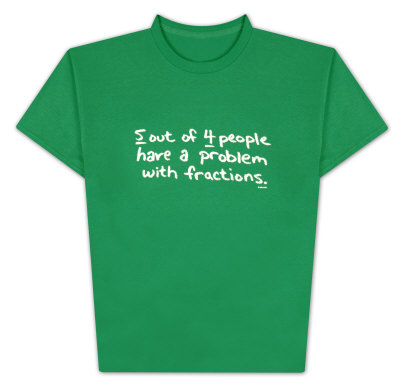

<!DOCTYPE html PUBLIC "-//W3C//DTD XHTML 1.0 Strict//EN"
    "http://www.w3.org/TR/xhtml1/DTD/xhtml1-strict.dtd">

<html xmlns="http://www.w3.org/1999/xhtml" xml:lang="en" lang="en-us">

<head>
  <meta http-equiv="content-type" content="text/html; charset=utf-8" />
  <meta http-equiv="content-type" content="text/html; charset=iso-8859-1" />

  <title>Ruby Facets</title>

  <!-- google verification-->
  <meta name="verify-v1" content="p14vW7GGMohDo2YKUHm0SXXTL+tzyPbKxxp35/WIQLA=" />

  <meta name="DESCRIPTION"
        content="Ruby Facets is a large collection of libraries for the Ruby programming lanaguage."/>

  <link rel="icon" href="/assets/images/favicon.ico" type="image/x-icon" />

  <link href="/atom.xml" rel="alternate" title="blog.facets.rubyforge.org" type="application/atom+xml" />

<!--
  <link href="/assets/styles/screen.css" media="screen, projection" rel="stylesheet" type="text/css" />
  <link href="/assets/styles/print.css"  media="print" rel="stylesheet" type="text/css" />
-->

  <!--[if IE]>
      <link href="/ie.css" media="screen, projection" rel="stylesheet" type="text/css" />
  <![endif]-->

  <link href="/assets/styles/site.css" rel="stylesheet" type="text/css" />
  <link href="/assets/styles/syntax.css" rel="stylesheet" type="text/css" />

  <!-- <script src="/js/rdocs.js" type="text/javascript"></script> -->
</head>

</body>
</html>

<body>

<div id="sidebar">
</div>

<div id="container">

  <div id="menu">
    <a href="/index.html">What's New</a> |
    <a href="/about.html">Overview</a> |
    <a href="/download.html">Download</a> |
    <a href="/learn.html">Documentation</a> |
    <a href="/endorse.html">Endorsements</a> |
    <a href="/community.html">Community</a> |
    <a href="/source.html">Development</a>
    
  </div>

  <div id="header">
    
  </div>

  <!-- <div id="drop_shadow"></div> -->

  <div id="content">
    
<div class="blurb">
  <div class="desc">
    <h1>Library Fantastic</h1>
    Ruby Facets is the single largest collection of core extension methods
    and standard library additions available for the Ruby programming language.
  </div>
</div>

<div class="page" style="text-align: center;">

  <div class="sell sm">
    
    <p>The philosophy of <span class="red">Facets</span> can be summed
    up in a simple mantra, "ALL BASE COMMON". The idea being, that by sharing a broad foundation
    in common, that foundation can better serve the Ruby community. There are a number of
    advantages to this approach. Among them: name consistency, better code-reuse, collaborative
    improvements and reduced installation requirements.</p>

    <p>At the heart of Facets is a collection of core extension
    methods. All of which can be loaded with the single call: <code class="red">require 'facets'</code>.
    There are hundreds of quality methods in this collection which have been derived
    from years of experience of dozens of top Ruby programmers.</p>

    <p>In addition to the core libraries, Facets provides  a number of additional
    classes, mixins and light frameworks. These solid libraries provide
    a general-purpose set of components commonly useful across a variety of applications.</p>
  </div>

  <div class="sell sm">
    
    <p>Facets is not the sole achievement of one person, but was made possible by the hard
    work of many excellent programmers. Some persons contributed code directly, other's simply
    had their code picked-up from another open resource. In either case, three cheeers
    for all!</p>
    <pre style="margin-left: 100px; font-size: 8pt; text-align: left; background: white; color: green;">
      Thibaut Barrere         Daniel J. Berger        Paul Brannan
      Mikael Brockman         Jamis Buck              Renald Buter
      Shashank Date           Robert Feldt            Mauricio Fernandez
      Florian Frank           Hal Fulton              Michael Granger
      Florian Gross           Thomas-Ivo Heinen       Ara T. Howard
      Dave Hoover             David Hansson           Mohammad Khan
      Gavin Kistner           Richard Laugesen        Derek Lewis
      MenTaLguY               Jan Molic               George Moschovitis
      Michael Neumann         Sean O'Halpin           Tim Pease
      Jonas Pfenniger         Ryan Platte             Tyler Rick
      Christoph Rippel        Thomas Sawyer :)        Daniel Schierbeck
      Gavin Sinclair          Tilo Sloboda            Phil Tomson
      Peter Vanbroekhoven     Jim Weirich             Jeff Wood
      Austin Ziegler          Why The Lucky Stiff
    </pre>
  </div>

  <div class="sell sm">
    </td>
    <td>
    <p>Facets is true open source software! Ruby Facets is distributed under the terms of the
    <a href="http://www.ruby-lang.org/en/LICENSE.txt" style="color: red;">Ruby License</a>,
    just like Ruby.</p>

    <p>Ruby Facets, Copyright (c) 2005-2008 Tiger Ops / Thomas Sawyer</p>

    <p>Credit and additional copyrights for particular code segments are
    given in their respective source. All licenses are either compatible
    with the Ruby license or the original author has given
    permission for inclusion of their code under this license.</p>
  </div>

  <div class="sell" style="margin-top: 60px;">
    <i>"Lots of cool stuff... There's just so much there!"</i><br/>
    <span style="font-size: 10pt;">--Austin Ziegler</span>
  </div>

</div>


  </div>

</div>

<div id="copyright">
  

  <br/><br/><br/>

  Copyright (c) 2005-2008 Thomas Sawyer &amp; Contributors <br/><br/>

  Ruby Facets was created by Thomas Sawyer (7rans), either written by hand or collected from a variety of Ruby resources.<br/>
  The system continues to be extended and improved by a diverse cast of open-source contributors.<br/><br/>

  Facets is released under the terms of the Ruby license, just like Ruby.<br/>
  The Ruby license is a dual GPLv2 license.<br/><br/>

  "Facets", "Ruby Facets" and "All Base Common" are trademarks of Thomas Sawyer. All rights reserved.

  <br/><br/>

  THIS SOFTWARE IS PROVIDED "AS IS" AND WITHOUT ANY EXPRESS OR
  IMPLIED WARRANTIES, INCLUDING, WITHOUT LIMITATION, THE IMPLIED
  WARRANTIES OF MERCHANTABILITY AND FITNESS FOR A PARTICULAR
  PURPOSE.
</div>

<script src="http://www.google-analytics.com/urchin.js" type="text/javascript">
</script>
<script type="text/javascript">
_uacct = "UA-2883355-2";
urchinTracker();
</script>

</body>
</html>

